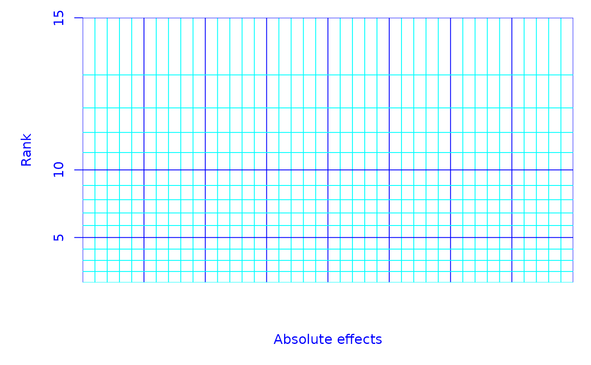

Half-normal graph paper
paper.RdThe daniel.paper function draws a graph-paper grid suitable for manually constructing a half-normal plot of effects. The paper is customized to the number of effects to be plotted, thus making the task as simple as possible.
Arguments
- n.effects
Numeric vector of effects or contrasts to be explored.
- linear
sequence of numbers to use for the linear scale.
- a
The adjustment used in scaling and centering ranks in the interval (0, 1). The \(i\)th ordered (half-) normal score is computed as the \((i - a) / (n + 1 - 2*a)\) quantile of the reference distribution. The value should always be less than 1, and is recommended to be in [0,.5]. The scale becomes somewhat more nonlinear as \(a\) increases.
- rank.axis
Character value of
"y"or"x"selecting whether the ranks of effects should be plotted as the vertical or the horizontal coordinate.- type
Character value matching
"half.normal"or"normal"specifying whether the scaling is for a half-normal or a normal plot. The latter is not recommended.- theme
Character giving the name of the theme to use for the grid lines. The default of
"blue"plots the major grid lines in blue and the minor ones in cyan. Other built-in themes are"bw"(black majors, and dotted black minors),"gray"(black majors and gray minors), and"bold"(all lines black, but major lines are heavier). See details below for information on how to create one's own theme.- lin.lab, rank.lab
Labels for the linear and rank scales.
Details
Use of type = "normal" is discouraged, as is discussed in the Details section in hnplot.
A custom theme, say "foo", may be created by creating a list named foo_thm, which should contain two elements named major and minor, and (optionally) axis. major must be a named list with graphical parameters col, lty, and lwd as described in par. minor only requires col and lty, as minor lines are always drawn using lwd = 1. axis must contain col and lwd, which are used for the tick marks and labels on the rank scale. If axis is not included, major is used.
References
Daniel, C (1959) Use of Half-Normal Plots in Interpreting Factorial Two-Level Experiments. Technometrics, 1(4), 311-341
Examples
require("unrepx")
old.par <- par(mar = c(5, 5, 1, 1) + .1)
daniel.paper(15)

neon_thm <- list(
major = list(col = "green", lty = 1, lwd = 2),
minor = list(col = "orange", lty = 1),
axis = list(col = "magenta", lwd = 2)
)
daniel.paper(31, rank.axis = "x", theme = "neon")
#> Error in get(paste0(theme, "_thm")): object 'neon_thm' not found
par(old.par)